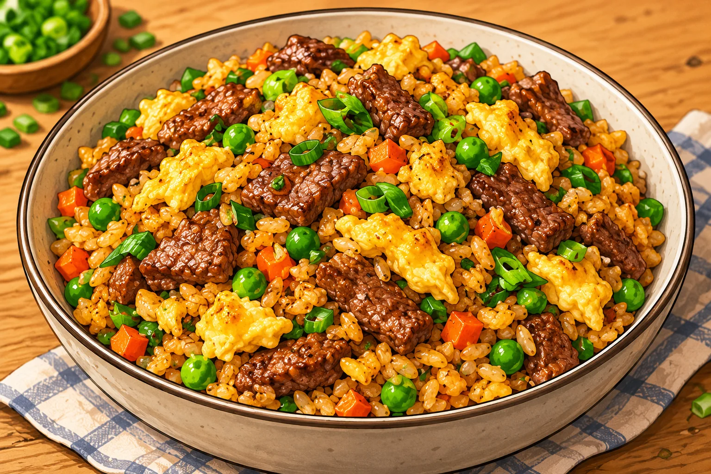

Riz sauté au bœuf et aux œufs
Une grosse portion maison, simple à préparer, avec des légumes et des protéines.
⏱ 20 min🍽 1 grosse portion💰 ≈ 4–5 €💪 ≈ 56 g protéines≈ 800 kcal
Ingrédients
- 170 g de bœuf émincé
- 2 œufs
- 90 g de riz cru, cuit et refroidi
- 80 g de carottes
- 80 g de petits pois
- 30 g d’oignon nouveau
- 15 ml de sauce soja sans poisson
- 5 ml d’huile
Préparation
- Cuire le riz à l’avance et le refroidir rapidement au réfrigérateur.
- Dans une poêle chaude, cuire le bœuf 3 à 5 min et réserver.
- Faire revenir carotte en petits dés et petits pois 4 min.
- Pousser les légumes de côté, brouiller les œufs puis ajouter riz, bœuf et sauce soja.
- Sauter le tout 2 à 3 min jusqu’à ce que ce soit bien chaud.
Conservation et réchauffage
Réfrigérer rapidement ; conserver 24 h au froid et réchauffer une seule fois à cœur.
Nutrition et prix indicatifs : à recalculer selon les marques et quantités dans MyFitnessPal. Les sauces mentionnées sont sans poisson : vérifier les étiquettes.